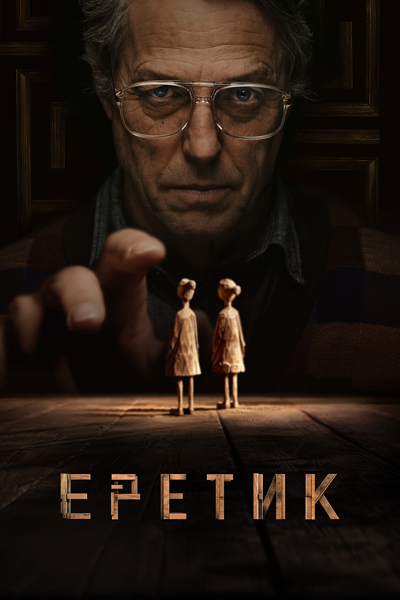
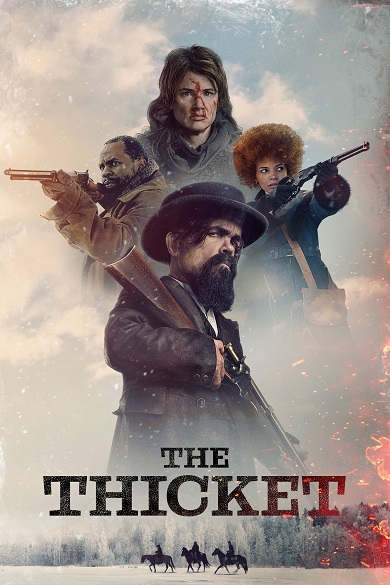

1
Астрал. Медиум
2024
Ирландия
ужасы
1 : 38
Дани была жестоко убита в собственном доме. Год спустя её сестра-близнец — слепая медиум Дарси — приезжает в
тот самый дом, где её бывший зять живёт уже с новой пассией, чтобы выяснить все подробности произошедшего.
2
Граф Монте-Кристо
2024
Франция, Бельгия
драма, триллер, мелодрама
2 : 58

Став жертвой коварного заговора, молодой Эдмон Дантес был арестован в день своей свадьбы за преступление,
которого не совершал. После 14 лет в тюрьме замка Иф ему наконец-то удается бежать. На таинственном острове,
о котором ему поведал в заключении его друг аббат Фариа, Эдмон находит легендарное сокровище и становится
графом Монте- Кристо. Теперь его единственная цель — месть.
3
Еретик
2024
США, Канада
триллер, ужасы
1 : 46

Церковная миссия приводит двух девушек к дверям обманчиво безобидного мистера Рида. Не успев
опомниться, они оказываются в его дьявольской ловушке, построенной с целью проверить их веру на
прочность. Чтобы выжить, им придется пройти серию изощренных испытаний и столкнуться с тем, что не поддается
рациональному объяснению. Теперь выбор, во что верить, для них означает выбор между жизнью и смертью.
4
Материнский инстинкт
2024
CША, Бельгия, Франция, Великобритания
драма, триллер
1 : 34
Начало 1960-х, американский пригород. Элис и Селин — лучшие подруги. Они живут в соседних домах, их сыновья
учатся в одном классе и растут как братья, а знаменательные даты две семьи отмечают вместе. Но этой идиллии
приходит конец после несчастного случая. Дружба женщин трещит по швам и оборачивается взаимными подозрениями
и упрёками.
5
Полицейский из Беверли-Хиллз: Аксель Фоули
2024
США
боевик, комедия, криминал, детектив
1 : 57
Детектив Аксель Фоули снова возвращается на улицы Беверли-Хиллз. После того, как жизнь его дочери Джейн
оказывается в опасности, они объединяют силы с новым партнёром, детективом Бобби Эбботом, и старыми
приятелями — Билли Роузвудом и Джоном Тэггартом, чтобы задать жару негодяям и раскрыть преступный заговор.
6
Тогда. Сейчас. Потом
2024
США
драма
1 : 43
Типичная американская гостиная дома в Новой Англии. Его обитатели сменяются на протяжении века. В 1950-х
здесь родился мальчик Ричард. В этой комнате проходит его детство и юность, вот он оканчивает школу, а вот —
уже приводит в дом невесту Маргарет. Молодая семья обзаводится детьми, здесь проходят все самые счастливые
моменты их жизни, и здесь же — грустные. Дети обзаводятся внуками, а Ричард и Маргарет начинают понимать,
что их время уходит.
7
Чаща
2024
США
вестерн, драма, криминал
1 : 45

Главный герой — Джек, чья сестра Лулу была похищена бандой жестокого убийцы по имени Билл. Чтобы спасти
девушку, Джек заручается поддержкой известного охотника за головами Реджинальда Джонса, проститутки и сына
бывшего раба. Они преследуют Билла в смертельно опасной зоне, известной как Большая Чаща — место, где царят
кровь и хаос.
8
Чужой: Ромул
2024
Великобритания, США, Венгрия, Австралия, Новая Зеландия, Канада
ужасы, фантастика, триллер
1 : 58
Действие фильма разворачивается между событиями «Чужого» Ридли Скотта и «Чужими» Джеймса Кэмерона. Группа
молодых колонизаторов — Рэйн Каррадайн, Кей, Энди, Тайлер, Наварро и Бьорн — оказываются на заброшенной
космической станции. Осматривая территорию, они сталкиваются с самой смертоносной формой жизни во Вселенной.